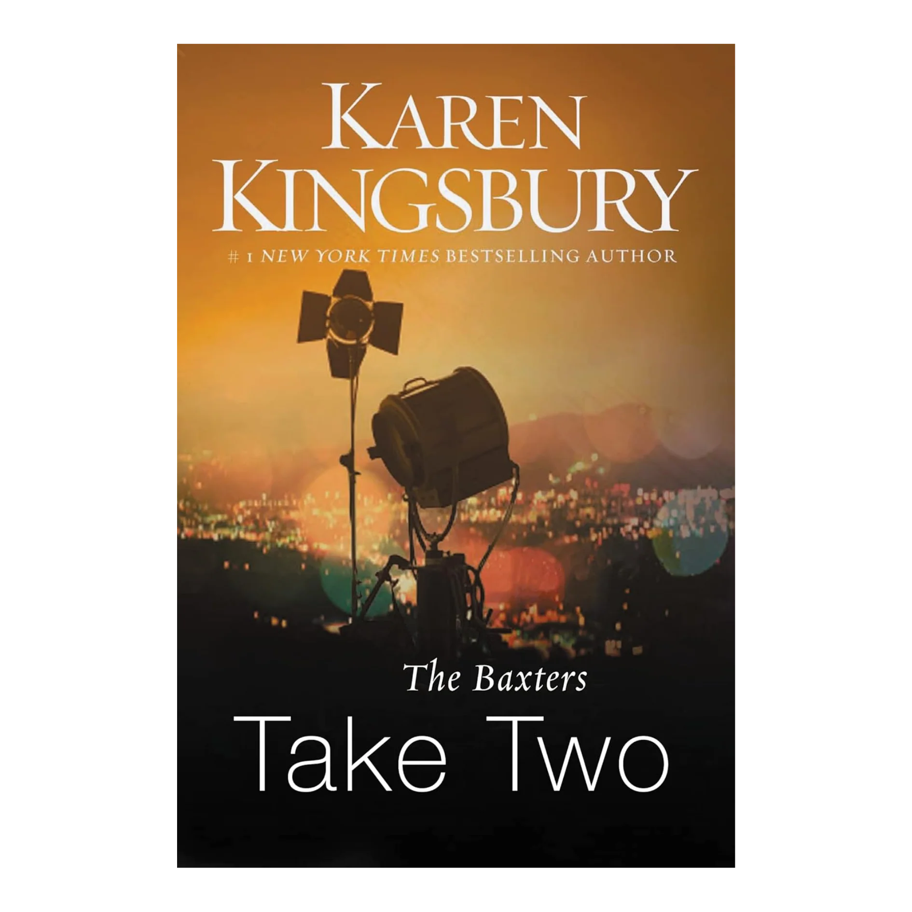

The Baxters: A Prequel
A terrible storm builds in the early morning sky over Bloomington, Indiana, as Elizabeth Baxter prepares to celebrate her daughter Kari’s wedding to Tim Jacobs. It’s supposed to be the happiest of days, but Elizabeth can’t shake a growing sense of dread. Is the storm a sign? Something bad is about to happen. Elizabeth knows it.
Redemption
Redemption by Karen Kingsbury and Gary Smalley (Book 1 of the Baxter Family series) follows Kari Baxter Jacobs, whose life shatters when her professor husband, Tim, confesses to an affair with a student and asks for a divorce. Relying on faith, Kari fights for her marriage, believing "love is a decision".
Remember
Remember (Redemption Series #2) by Karen Kingsbury is the second book in the Baxter Family/Redemption series, focusing on Ashley Baxter’s journey toward healing after a traumatic past in Paris. Haunted by her mistakes, Ashley finds hope through caring for Alzheimer's patients. The story, heavily influenced by the September 11, 2001, attacks, features Landon Blake, who fights for his life at Ground Zero while trying to win Ashley’s love.
Return
Return (Redemption Series #3) by Karen Kingsbury is a faith-based drama focusing on Luke Baxter, who abandons his faith, family, and girlfriend, Reagan, after the 9/11 attacks. Unaware he is the father of Reagan's child, Luke faces a, spiritual crisis that threatens to tear the Baxter family apart before a shocking secret forces him to confront his choices and return to his roots.
Rejoice
Rejoice (Redemption Series #4) by Karen Kingsbury follows Brooke Baxter West and her husband, Peter, as they struggle with a fractured marriage and face a devastating crisis when their daughter, Hayley, nearly drowns. As Peter falls into prescription drug addiction due to guilt, the Baxter family relies on faith, forgiveness, and healing to navigate profound loss.
Reunion
Reunion (2004) is the emotional fifth and final book in Karen Kingsbury’s Redemption Series, centering on the beloved Baxter family. While planning a major family gathering, the family is rocked by a deadly cancer diagnosis for Elizabeth Baxter. The story focuses on faith, secrets, and finding hope in God amidst profound sorrow.
Fame
Fame by Karen Kingsbury is the first book in the Firstborn series, following Hollywood actor Dayne Matthews as he navigates the pressures of fame while discovering his connection to the Indiana-based Baxter family. Concurrently, Katy Hart, director of Christian Kids Theater, is offered a role in Dayne's new film, forcing her to confront her past.
Forgiven
Forgiven (2005),follows actor Dayne Matthews as he processes shocking revelations about his past, seeking to find forgiveness and his biological family. Simultaneously, Katy Hart manages a tragic loss at her Christian theater camp, while John Baxter navigates a complicated family secret, exploring themes of grace, faith, and redemption.
Found
Found by Karen Kingsbury is the emotional third book in the Firstborn series, focusing on John Baxter’s quest to fulfill his dying wife's wish to find their firstborn son. As Dayne Matthews questions his life and faith, a dramatic, faith-filled story unfolds, involving a romantic storyline with Katy Hart and a perilous tornado in Bloomington.
Family
Family by Karen Kingsbury (Firstborn Series, #4) follows John Baxter’s emotional journey to reconcile with his long-lost firstborn son while his other children, specifically Ashley, navigate personal crises. Amidst a Hollywood trial, Dayne Matthews and Katy Hart face intense pressure, and the family is tested to find strength in faith and unity.
Forever
In Karen Kingsbury's Forever (Firstborn Series #5), Katy Hart and Hollywood star Dayne Matthews face a tragic car accident just as they are planning their wedding. The Baxter family rallies together in Los Angeles to support them, navigating intense paparazzi, Luke Baxter's internal struggles, and a fight for Dayne's life and recovery.
Sunrise
Sunrise, the first book in Karen Kingsbury's Sunrise Series (part of the Baxter Family Drama), follows Dayne and Katy Matthews as they navigate married life, fame, and a secret wedding. Amidst, John Baxter finds new love, and the Flanigan family struggles with a troubled boarder, centering on themes of faith, redemption, and new beginnings.
Summer
Summer by Karen Kingsbury (Sunrise Series, Book 2) follows the Baxter family through a challenging season of faith, featuring Ashley and Kari navigating high-risk pregnancies, while Dayne and Katy Matthews face marital strain during a movie production. Concurrently, Cody Coleman leaves the Flanigan family to join the Army, marking a significant transition.
Someday
Someday (Sunrise Series, Book 3) by Karen Kingsbury follows the Baxter family navigating intense personal trials, including John Baxter contemplating selling the family home and coping with loss. The story focuses on Dayne and Katy Matthews handling celebrity pressures and rumors of infidelity, while Ashley and Landon face the tragic, short life of their baby.
Sunset
Sunset, the final book in Karen Kingsbury’s Sunrise Series (#14 in the Baxter Family series), centers on John Baxter’s remarriage to Elaine, bringing the family together through emotional trials and new beginnings.
Take One
Take One by Karen Kingsbury (Above the Line Series, Book 1) follows filmmakers Chase Ryan and Keith Ellison as they leave the mission field in Indonesia to create a faith-based film in Hollywood. As they face financial, production, and personal challenges, they must fight to keep their, mission-driven,, "above the line" project from falling apart.

Take Two
ake Two by Karen Kingsbury (Above the Line Series #2) follows Christian filmmakers Chase Ryan and Keith Ellison as their Hollywood careers take off. As they chase success, they face intense pressure, strained marriages, and the moral dangers of Tinsel Town, while Keith's daughter, Andi, makes risky choices.
Take Three
Take Three (2010), the third book in Karen Kingsbury's Above the Line series, follows filmmakers Chase Ryan and Keith Ellison as they celebrate their first successful movie. While chasing Hollywood dreams, they face personal crises: Chase leaves the production, and Keith’s daughter, Andi, faces dangerous life-altering consequences, while Bailey Flanigan navigates romance with Cody Coleman.
Take Four
Take Four (2010) by Karen Kingsbury is the final book in the Above the Line series, focusing on filmmakers Keith Ellison and Dayne Matthews as they navigate Hollywood to create faith-based films. The story follows the duo as they sign a top actor for their movie, only for him to plunge into a public scandal.
Leaving
Leaving, the first book in Karen Kingsbury’s Bailey Flanigan series, follows aspiring actress Bailey Flanigan as she leaves her Bloomington, IN home to pursue a Broadway career in New York. She navigates auditions and romance while heartbroken over the sudden, unexplained disappearance of her ex-boyfriend, Cody Coleman.
Learning
Learning by Karen Kingsbury a contemporary Christian romance following Bailey's journey on Broadway while navigating a painful separation from Cody Coleman. As Bailey pursues acting in New York and Cody mentors football players in Indiana, both face personal, professional, and emotional trials, leading them to learn significant life lessons about faith, love, and trusting God.
Longing
Longing by Karen Kingsbury follows Bailey as she navigates a long silence from Cody Coleman, turning instead to Hollywood co-star Brandon Paul for comfort. As she develops new feelings in New York, Cody finds closeness with someone else in his small town, yet both struggle with intense, lasting longing for each other.
Loving
Loving by Karen Kingsbury is the fourth and final installment in the Bailey Flanigan series, following Bailey as she navigates her blossoming Broadway career and a critical love triangle. Torn between her first love, Cody Coleman, and actor Brandon Paul, Bailey seeks faith-based guidance to make a life-defining decision regarding her heart and future.
In This Moment
In This Moment by Karen Kingsbury is a Baxter Family novel focusing on Hamilton High principal Wendell Quinn, who starts a voluntary after-school Bible study ("Raise the Bar") to combat rising violence and low morale. The program thrives, but a lawsuit over religious freedom threatens his job and the school's turnaround.